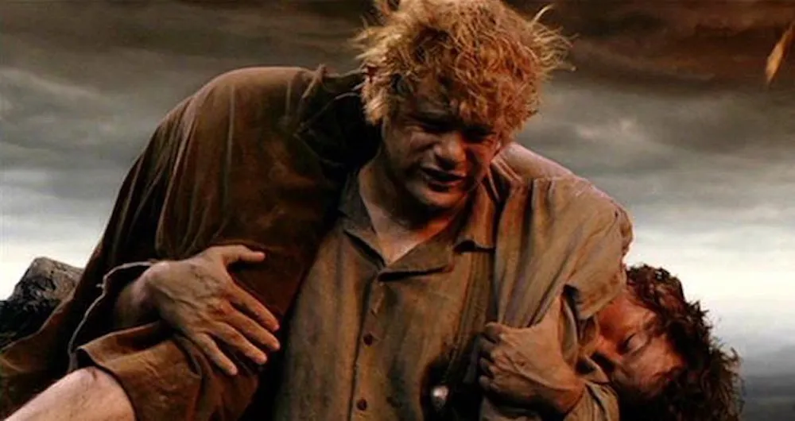

About Samwise
Samwise Gamgee, known as Sam, was a hobbit of the Shire. He was Frodo Baggins' gardener and best friend. Sam proved himself to be Frodo's closest and most dependable companion, the most loyal of the Fellowship of the Ring, and played a critical role in protecting Frodo and destroying the One Ring.
Samwise carrying Frodo.
Samwise's Characteristics
- He is the real hero of lord of the rings.
- He has the purest heart and soul middle earth has ever seen
- PO-TA-TOES
Samwise's Friends
Samwise has some good friends in Hobbington. Click on ther links below to read more about them: